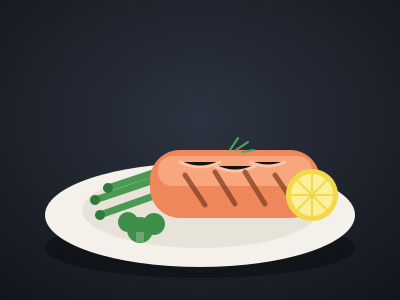

WITAMY W
Bistro Noir
Nowoczesna restauracja we Wrocławiu
Spróbuj naszych dań i poczuj wyjątkową atmosferę.
WITAMY W
Spróbuj naszych dań i poczuj wyjątkową atmosferę.
NASZE MENU
 🍝
🍝
Świeży makaron z domowym sosem.

🐟Świeży łosoś z warzywami sezonowymi.
 🍫
🍫
Słodkie zakończenie kolacji.
ATMOSFERA
Ciepłe światło, wygodne krzesła i przytulne stoliki. Miejsce, w którym odpoczniesz w gronie przyjaciół i rodziny.


O NAS
Bistro Noir to nowoczesna restauracja w sercu Wrocławia. Gotujemy ze świeżych, sezonowych składników i podajemy każde danie w ciepłej, spokojnej atmosferze. Wpadnij na lunch, zostań na kolację.
KONTAKT
ul. Przykładowa 1, Wrocław
Pn–Nd: 12:00–22:00
Zadzwoń i zarezerwuj Wyznacz trasę